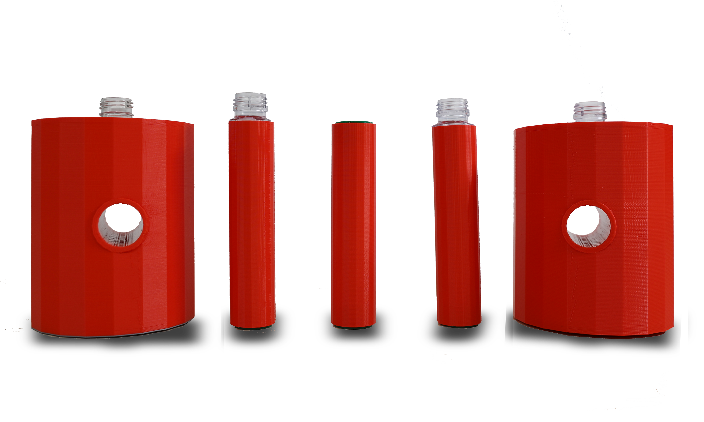

첫번째 도안
처음 만든 도안입니다. 첫 기획안은 정육면체를 기준으로 제작하였습니다.



하지만 콜스를 만나면 어떨까?


처음 만든 도안입니다. 첫 기획안은 정육면체를 기준으로 제작하였습니다.
정육면체는 모서리로 인해 다칠 위험성이 있기에 원형 기둥으로 수정과 동시에 정확한 크기를 측정했습니다.
여태까지 해왔던 수정과 도면을 통해 3D 프린터로 제작하기 시작했습니다.
옆면에 통로를 하나 더 만들어 다른 운동 종류도 할 수 있게끔 기획했습니다.
물과 모래를 위해 내부를 채우고 나서 페트병을 통해 연결하고 사용하는 방식으로 도면을 작성했습니다.
완성 모습입니다.
| 덤벨 컬 | 리버스 컬 |
|---|---|
| 바벨 컬 | 콜스를 동반한 스쿼트 |

|